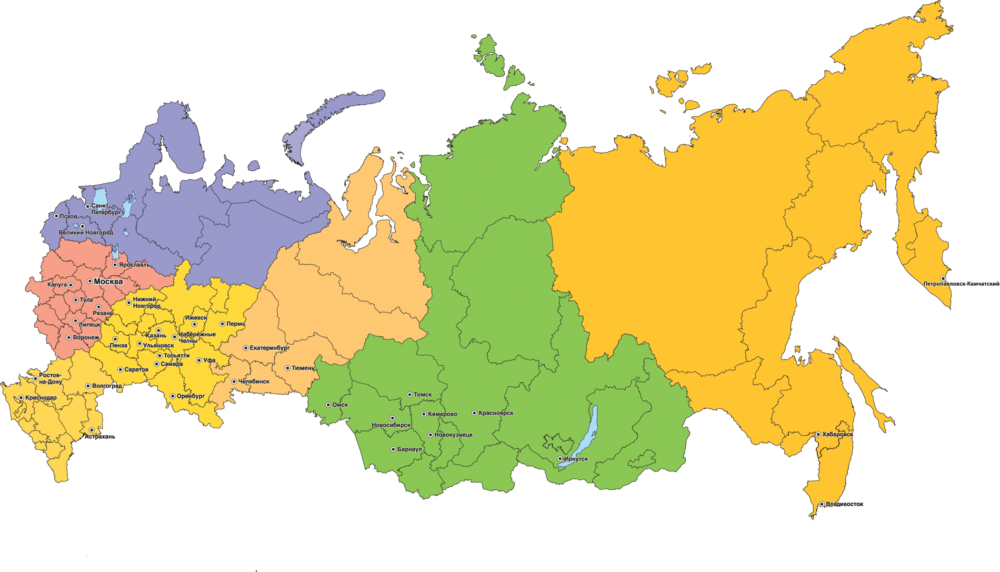

Обо мне

География
|  |
Родился в Москве. Живу в ближнем Подмосковье (Люберцы, скорее даже Жулебино). Работаю в Москве. Спокойно отношусь к переездам. Пять лет проработал в Татарстане (управлял большим проектом). Честно говоря, Казань с точки зрения жизни нравится даже больше чем Москва. |
Учеба
|
Все как у многих. Средняя школа еще в советские времена. За оценками не гнался, но закончил хорошо, средний балл – 4,5. Параллельно окончил физико-математическую школу при одном из ведущих ВУЗов. После школы поступил в военное училище связи, которое закончил с отличием. Это дало базовые технические знания в области телекоммуникаций и ИТ, которые потом развивал. Потом служба, пока служил, окончил юридический институт по специальности «Гражданское право». Юристом не стал, но обучение помогло в дальнейшем в работе, особенно когда управлял проектами и компаниями, и требовалось умение работать с законодательством. Когда не стало хватать знаний по управлению проектами и компаниями, поступил в MBA (информационный менеджмент). Успешно закончил. Остальное – курсы и переподготовка, но это уже отдельный разговор. Меня все время спрашивают, почему я не пишу в резюме про дополнительные дипломы. Не вижу смысла. Юристом я не был и опыта юридической деятельности у меня нет. MBA? Здесь я соглашусь с одним из своих преподавателей в MBA – диплом ничего не дает, те же самые дисциплины можно пройти самостоятельно отдельными курсами. Главное умение применять полученные знания. После этих слов начал сам подбирать себе курсы и просто повышать квалификацию в тех вопросах, в которых не хватало знаний. |
Работа

|
Недавно задумался. Если не считать службу в армии я уже работаю 21 год. Кем только не был за это время – ведущим специалистом по управлению проектами, менеджером по продажам, директором продуктового департамента, директором по развитию бизнеса, коммерческим директором, генеральным директором, как компании, так и группы компаний. Как и у всех были взлеты и падения. Но если оценивать весь путь целиком – это было управление проектами, маленькими и большими, порученными и созданными с нуля самим. Даже несмотря на то что наверное как и у всех не все проекты были удачными, но все они в той или иной мере были интересными. Да и сейчас все чем занимаюсь – это интересные новые направления и проекты. В любом случае как прошедшие, так и существующие проекты, очень много меня научили. |
Семья

|
Семья это святое. Красавица жена, двое мальчишек. Хотя какие они уже мальчишки. Один уже работает, второй окончил школу и готовится к поступлению в институт. Но, несмотря на это они все равно для меня мои мальчики. Квартира, дача. Большое желание, наконец, то заработать достаточное количество денег и переехать в собственный дом за городом, на природу. Пока не получается, то неудачные вложения в бизнес, то помогаю родителям (это тоже святое), то надо подымать сыновей. Но все-таки стремлюсь к тому, чтобы эта мечта о собственном доме исполнилась, и тогда можно будет мечтать о чем-нибудь другом. |